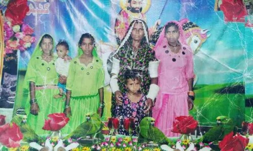

Watch Live
Imran Khan
Punjab Crisis
Saturday, December 31, 2022|07 Jumada Al-Akhirah 1444
اردو
Arshad Sharif
PAK v NZ
LATEST
PAKISTAN
WORLD
BUSINESS & ECONOMY
SPORTS
LIFE STYLE
VIDEOS
WORLD | 42 MINUTES AGO
Former pope Benedict XVI dies aged 95
Funeral is expected to be at the Vatican, presided over by Francis
PAKISTAN | 33 MINUTES AGO
Alleged shooter in NED student’s murder was recently released on bail: Karachi police
Police say Jumma Khan was killed ‘from firing of his co-accused’ during a raid

SPORTS | 2 HOURS AGO
Shahid Afridi opens up about removing Babar from Test captaincy
Pakistan failed to win single red-ball game at home this year

SPORTS | 8 HOURS AGO
Cristiano Ronaldo joins Saudi Arabian club Al Nassr on two-year deal
I am eager to experience a new football league in a different country, says Portuguese captain
Confusion surrounds Islamabad LG election as polling staff fails to show up
Top teams visits put Pakistan back on World map in 2022
Who is Daya Bhel and why her body was dismembered in gruesome Sindh killing
Zverev crashes in first ATP match since June injury at United Cup
Factbox: A glimpse into Portugal forward Cristiano Ronaldo’s career
WORLD | 42 MINUTES AGO
Former pope Benedict XVI dies aged 95
Funeral is expected to be at the Vatican, presided over by Francis
PAKISTAN | 33 MINUTES AGO
Alleged shooter in NED student’s murder was recently released on bail: Karachi police
Police say Jumma Khan was killed ‘from firing of his co-accused’ during a raid
SPORTS | 2 HOURS AGO
Shahid Afridi opens up about removing Babar from Test captaincy
Pakistan failed to win single red-ball game at home this year
SPORTS | 8 HOURS AGO
Cristiano Ronaldo joins Saudi Arabian club Al Nassr on two-year deal
I am eager to experience a new football league in a different country, says Portuguese captain
POPULAR
-
Who is Daya Bhel and why her body was dismembered in gruesome Sindh killing
-
Sharjeel rebuffs ‘rumours’ of Afghan juveniles in Sindh jails
-
Saudi Arabia bans Zam Zam water in checked-in luggage
-
Mehndi function pictures of Shahid Afridi’s eldest daughter go viral
-
What does ‘Lahore da Pawa’ mean?
-
Terrorism will be dealt with firmly, NSC decides
-
Zinger paratha roll
-
Williamson double ton puts New Zealand in driver’s seat
-
Two Polish mothers win custody battle against same Pakistani man in Islamabad court